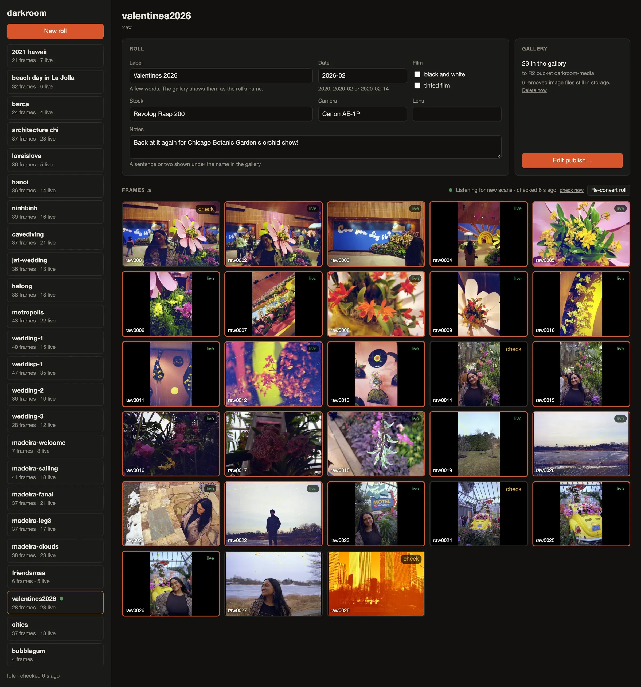
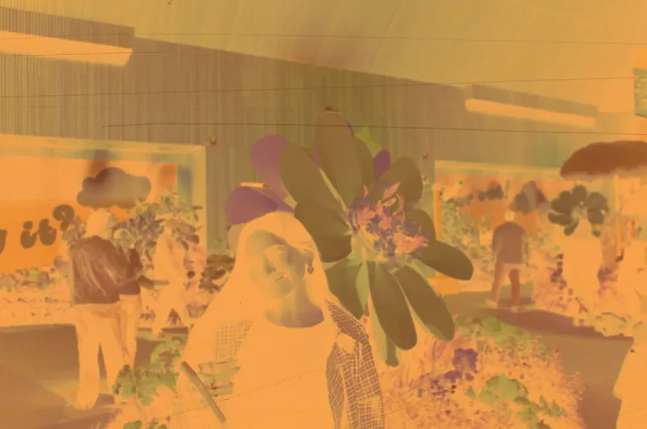
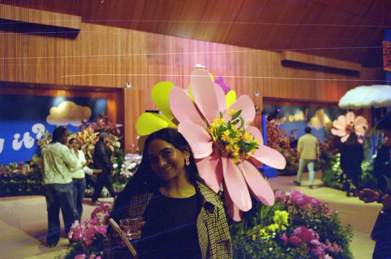
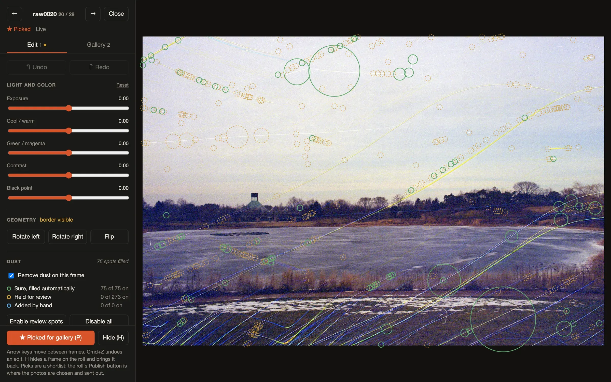
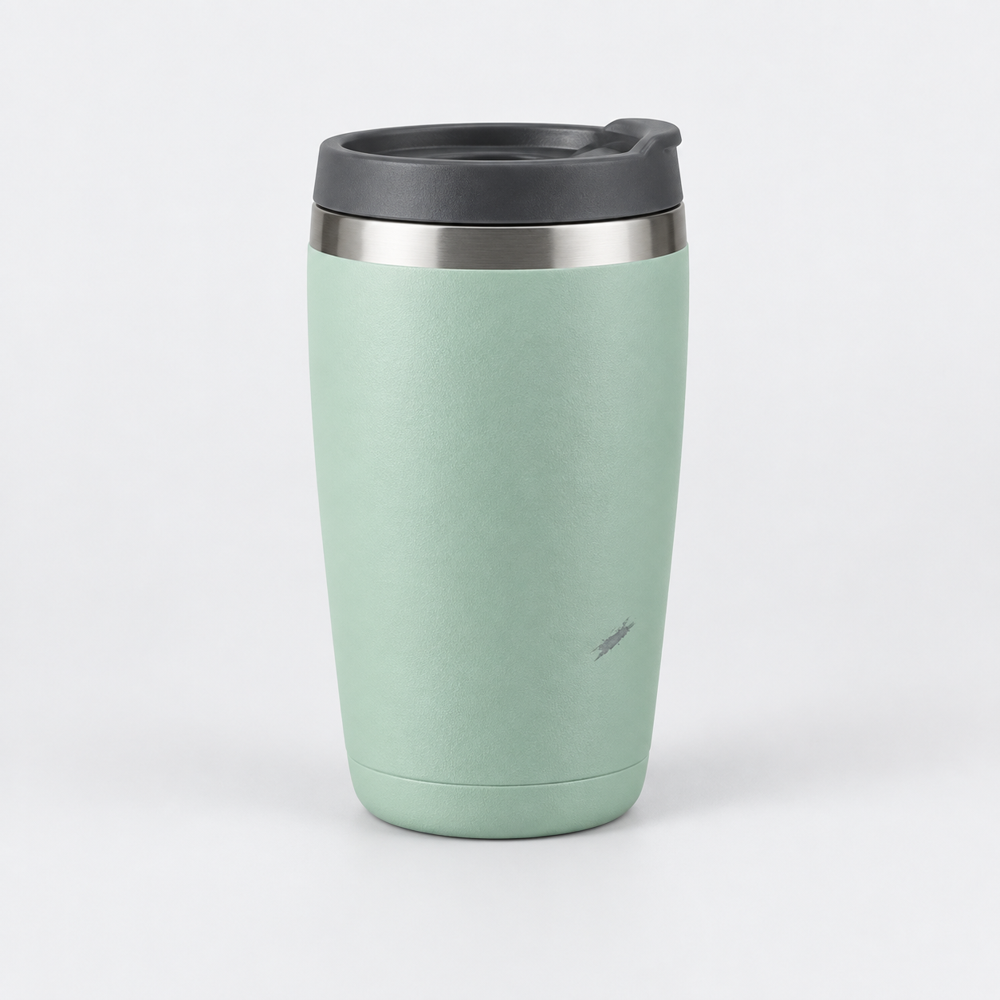

HELLO, HUMAN! CASE STUDY 05
AI로 만든 디지털 암실,
핵심은 ‘전부 자동화’가 아니었다
35mm-studio로 살펴보는 선택적 AI 적용, 사람의 검토, 되돌릴 수 있는 자동화
사진을 찍는 일보다 사진을 처리하는 데 더 많은 시간을 쓰게 된다면, 무엇을 바꿔야 할까요?
이 프로젝트의 제작자는 36장짜리 필름 한 롤을 스캔하고 편집하는 데 평균 4시간가량을 썼다고 합니다. 촬영은 즐거웠지만, 찍은 사진을 컴퓨터로 옮기고 정리하는 일은 점점 부담스러워졌습니다.
그가 만든 35mm-studio는 이 부담을 줄이기 위한 개인용 사진 작업실입니다. 스캔한 네거티브를 일반 사진으로 변환하고, 먼지를 보정하고, 검색용 태그를 붙입니다. 사람이 결과를 검토하고 공개할 사진을 고르면 발행까지 이어집니다.
이 사례에서 눈여겨볼 점은 자동화의 범위를 정한 방식입니다. AI에게 맡길 일, 기존 도구를 그대로 쓸 일, 사람이 직접 판단할 일을 나눴습니다.
근거 · 제작기의 작업 시간 기록 ↗
무엇을 만든 프로젝트인가
35mm-studio는 스캔 이후의 작업을 연결하는 로컬 애플리케이션입니다. 필름을 현상하거나 스캐너를 대신 조작하는 장비는 아닙니다.
사진을 처리하는 서버는 Python과 FastAPI로, 화면은 React와 Vite로 만들었습니다. 기본적인 사진 처리와 검토는 사용자의 컴퓨터에서 이루어집니다. 발행할 결과는 로컬 폴더에 저장하거나 Cloudflare R2로 전송할 수 있습니다.
스캔부터 발행까지는 다음 순서로 이어집니다.
- 사람 + 기존 도구필름 장착·스캔VueScan이 원본 TIFF 저장
- 로컬 처리변환·먼지 보정태그 초안은 별도 작업
- 사람검토·수정·선택보정 여부와 공개할 사진 결정
- 발행웹용 이미지 전송로컬 폴더 또는 R2 → 갤러리
설계 문서에 따르면 앱은 스캐너와 직접 통신하지 않습니다. VueScan이 스캔 파일을 저장하면 그다음 처리를 이어받습니다. 상대적으로 오래 걸리는 태그 생성은 별도 작업으로 분리했습니다.
완성한 사진을 공개하는 갤러리도 만들었습니다. 제작자는 Three.js로 구현한 필름 통을 고른 뒤, 필름을 꺼내듯 사진을 살펴보도록 구성했다고 설명합니다. 사진을 정리하는 작업실과 감상하는 공간을 따로 만든 셈입니다.
이 구성을 보면 프로젝트의 목적이 드러납니다. 누구에게나 맞는 범용 사진 도구를 만들기보다, 자신이 사진을 찍고 보관하고 다시 꺼내 보는 방식에 맞춰 소프트웨어를 만든 것으로 볼 수 있습니다.

근거 · 프로젝트 소개 ↗ · 설계 문서 ↗ · 갤러리 제작 기록 ↗
첫 시도는 하드웨어 제어에서 멈췄다
처음에는 스캔부터 편집까지 모두 자동화하려고 했습니다.
제작자는 Claude가 오픈소스 스캐너 드라이버인 SANE을 통해 장비를 직접 제어하도록 시도했습니다. 하지만 스캔 방향과 장비 구동에 문제가 생겨 스캐너를 분해하고 수리해야 했다고 합니다. 이는 제작자가 설명한 고장 경위입니다. 이 글에서 정확한 원인을 독립적으로 재현해 확인한 것은 아닙니다.
이 일을 겪은 뒤에는 자동화 범위를 바꿨습니다. 스캔은 기존 도구에 맡기고, 파일이 만들어진 다음부터 자동으로 처리하도록 했습니다.
여기서 주목할 점은 실패 뒤에 내린 설계 결정입니다. 전체 과정을 자동화하지 못하더라도, 반복되는 일부 작업을 줄이는 것만으로 충분히 가치가 있을 수 있습니다.
필름을 장착하는 일이 여전히 사람의 몫이라면 스캐너 제어까지 새로 구현할 필요가 있는지 따져볼 수 있습니다. 이미 잘 작동하는 스캔 도구에 후처리 자동화를 연결하는 편이 목적에 더 잘 맞을 수도 있습니다.
하드웨어를 직접 제어해야 하는 프로젝트라면 그에 맞는 조건부터 정해야 합니다. 허용할 동작과 이동 범위, 재시도 횟수, 이상 징후가 생겼을 때 멈출 기준이 필요합니다. 원인을 모르는 상태에서 같은 동작을 반복하는 것을 복구 방법으로 삼아서는 안 됩니다.
이 사례의 전환점은 실패했을 때 손실이 큰 장비 제어에서 벗어나, 결과를 확인하고 수정하기 쉬운 후처리에 자동화를 집중한 것입니다.
근거 · 스캐너 제어 시도와 전환 ↗ · 현재 작업 흐름 ↗
AI를 사용했지만, 모든 처리를 AI에게 맡기지는 않았다
35mm-studio 안에서는 일반 코드와 AI 모델이 서로 다른 일을 맡습니다. 공개 코드를 보면 그 역할을 구체적으로 확인할 수 있습니다.
| 작업 | 구현 방식 | 맡긴 역할 |
|---|---|---|
| 네거티브 변환과 색 보정 | 수치 계산 도구 NumPy | 필름과 사진에서 측정한 값을 바탕으로 변환 |
| 먼지 후보 위치 탐지 | 영상 처리 도구 OpenCV와 규칙 | 먼지로 의심되는 영역 선별 |
| 선택된 먼지 영역 채우기 | LaMa 이미지 인페인팅 모델 | 지정된 영역을 주변과 어울리게 보정 |
| 검색용 태그 초안 | Ollama를 통한 비전 모델 호출 | 사진에 보이는 내용을 검색어로 정리 |
색 변환, 먼지 검출, 모델 호출은 코드에서도 각각 분리되어 있습니다.
색 변환은 재현 가능한 계산으로
색 변환에는 필름이 빛을 얼마나 흡수하는지를 나타내는 광학적 농도와 색 채널별 측정값을 사용합니다. 촬영되지 않은 필름 영역에서 기준값을 얻거나 롤 전체에서 기준을 추정한 뒤, 각 사진을 보정합니다. 이때 사진마다 색 채널을 조정할 수 있는 범위에는 제한을 둡니다.
쉽게 말해 한 롤의 공통 기준을 먼저 잡고, 사진별로 필요한 만큼만 조정하는 방식입니다.
결과가 마음에 들지 않을 때도 원인을 나누어 살펴볼 수 있습니다. 롤의 기준값이 잘못됐는지, 특정 사진의 노출이 다른지, 사람이 선택한 설정이 영향을 줬는지 확인하는 것입니다.


비전 모델은 태그 작성에 집중
사진의 내용을 읽는 비전 모델은 검색용 태그를 제안합니다. 로컬에서 모델을 실행하는 도구인 Ollama를 이용하며, 기본적으로 Qwen3-VL 계열을 우선 선택하되 다른 모델로 바꿀 수도 있습니다. 응답은 정해진 항목으로 데이터를 주고받는 JSON 형식으로 요청합니다. 형식이 맞더라도 태그의 내용이 정확한지는 별도로 검토해야 합니다.
설계 기록에는 효과가 없어 제거한 AI 기능도 나옵니다. 비전 모델에 색 이상이나 먼지 여부를 판단하게 했지만, 유용한 결과를 얻지 못해 제외했다고 합니다.
이 선택은 AI의 역할을 정할 때도 참고할 만합니다. 규칙으로 처리하기 좋은 일, 전문 모델이 적합한 일, 사람이 결정해야 하는 일을 나누면 각 작업에 맞는 방법을 고를 수 있습니다.
개발을 돕는 AI의 역할과 완성된 시스템에서 AI가 맡는 역할도 구분해서 평가해야 합니다.
근거 · 색 변환 ↗ · 먼지 탐지 ↗ · LaMa 보정 ↗ · 모델 호출 ↗ · 제거한 AI 기능 ↗
먼지는 지우고, 사진 속 빛은 남기려면
먼지 제거 기능을 보면 자동 처리와 사람의 검토를 왜 나눴는지 알 수 있습니다. 제작자는 초기 검출기가 바닷물에 반사된 햇빛 약 2,000개를 먼지로 잘못 표시했다고 설명합니다.
이 후보들을 모두 지웠다면 사진 속 실제 빛까지 사라졌을 것입니다. 먼지를 많이 찾는 것만큼, 먼지가 아닌 것을 잘못 지우지 않는 일이 중요합니다.

검출된 후보라고 해서 모두 지우지는 않습니다. 바로 처리하지 않은 영역은 따로 표시합니다.
이 화면에서는 75곳에 자동 보정을 적용하고, 273곳은 보정을 적용하지 않은 채 검토 대상으로 남겼습니다. 사진 한 장의 검토 상태이며, 전체 처리 성능을 뜻하는 수치는 아닙니다.
두 확대 이미지는 같은 원본의 일부입니다. 사진의 내용과 표시를 수정하거나 새로 생성하지 않았으며, 직접 앱을 실행해 캡처한 화면도 아닙니다.
공개된 검출 코드는 주변 질감이 매끄러운 영역을 우선 살핍니다. 후보와 주변의 농도 차이, 후보의 형태를 바탕으로 점수를 매깁니다. 후보가 한곳에 몰려 있거나 어두운 장면에 작은 광원이 있는 경우에는 자동으로 처리하지 않고 검토 대상으로 남깁니다. 대신 복잡한 질감 속 먼지를 놓칠 수 있다는 한계도 설계 문서에 적혀 있습니다.
여기서 confidence라는 값은 농도와 형태를 조합해 계산한 규칙 기반 점수입니다. 자동 처리 기준이 0.75라고 해서, 먼지일 확률이 통계적으로 75%라는 뜻은 아닙니다.
실제로 사용할 때는 이 점수로도 걸러내지 못하는 오류가 무엇인지, 어떤 상황에서 자동 처리를 보류하는지를 살펴봐야 합니다.
선택한 영역은 LaMa라는 인페인팅 모델이 주변과 어울리게 채웁니다. 다만 자연스러워 보이는 보정 결과가 가려진 실제 장면을 정확히 복원했다는 뜻은 아닙니다.
이 프로젝트는 수정할 영역을 별도로 기록하고 보정 전 미리보기를 보관합니다. 사람은 후보별로 보정을 적용할지 바꿀 수 있습니다. 잘못 판단할 가능성이 있는 만큼, 수정 후보를 찾는 과정과 실제 수정을 구분하고 되돌릴 방법도 마련한 것입니다.
주변 후보 밀집 아님
어두운 장면의 작은 광원 아님자동 보정 후보
사람이 이전에 바꾼 적용 여부는 별도의 상태 관리 단계에서 반영됩니다. 0.75는 확률이 아닌 규칙 기반 점수입니다.
근거 · 오검출 제작 기록 ↗ · 점수와 검토 분기 ↗ · LaMa 공식 저장소 ↗
다시 실행해도 사람의 판단이 남아 있어야 합니다
검토 화면을 만드는 것만으로 사람의 판단이 존중되는 것은 아닙니다. 한 번 거절한 보정이 재실행할 때마다 다시 적용된다면 사용자는 같은 검토를 반복해야 합니다. 내부 기준이 바뀌었다는 이유로 이미 승인한 결과까지 사용자 모르게 달라지는 일도 문제입니다.
35mm-studio는 원본과 설정, 사람의 선택을 따로 보관하고 자동 재처리의 범위를 제한하는 방식으로 이런 상황을 다룹니다.
원본과 편집 설정의 분리
각 롤은 일반 폴더로 관리합니다. 폴더 안에는 원본 스캔, 사진별 JSON 설정, 작업용 TIFF, 출력용 JPEG를 나누어 보관합니다. 편집할 때는 원본을 덮어쓰지 않고 설정을 바꾼 뒤 다시 처리합니다.
덕분에 결과가 이상할 때 원본과 처리 설정을 함께 살펴볼 수 있습니다. 같은 원본에 다른 설정을 적용해 비교할 수도 있습니다. 원본을 보존하는 일이 결과를 검토하고 수정할 수 있는 기반이 되는 것입니다.
사람이 바꾼 판단의 유지
먼지를 다시 검출할 때는 새 후보를 이전 후보와 비교합니다. 같은 후보로 판단되면 사람이 정한 보정 적용 여부를 이어받습니다. 사람이 손으로 추가한 보정 영역도 따로 보관합니다.
다만 같은 후보인지는 위치를 기준으로 판단합니다. 중심 좌표가 얼마나 가까운지, 새 후보의 중심이 이전 영역 안에 들어오는지를 비교합니다. 이미지나 검출 결과가 크게 달라져도 언제나 같은 대상을 찾아낸다고 보장할 수는 없습니다.
이 방식은 한 번의 수정을 취소하는 데서 더 나아가, 다시 처리할 때도 사람의 선택을 이어가려는 설계입니다.
자동 재처리와 승인 결과의 구분
처리할 일을 순서대로 담는 작업 큐에도 우선순위가 있습니다. 사람의 편집 작업을 새 파일 처리나 백그라운드 작업보다 먼저 처리하도록 합니다. 다만 이미 실행 중인 작업을 즉시 중단하고 끼어드는 방식은 아닙니다.
롤의 색 기준이 바뀌어 사진을 자동으로 다시 처리할 때는 이미 승인한 사진을 제외합니다. 이 보호는 해당 자동 재처리에만 적용되며, 사람이 직접 편집하거나 다시 처리하는 것까지 막지는 않습니다.
새 파일을 처리할 시점도 정해 두었습니다. 파일을 감시하는 코드는 크기와 수정 시각이 4초 동안 변하지 않는지 확인한 뒤 작업을 등록합니다. 다만 잠시 변화가 없다는 사실만으로 모든 저장 환경에서 파일 쓰기가 끝났다고 보장할 수는 없습니다. 다른 환경에 적용할 때는 이 조건이 적절한지 다시 확인해야 합니다.
작은 개인용 앱에서도 언제 처리하고, 무엇을 먼저 처리하며, 어떤 결과는 그대로 둘지 정해야 합니다. 이런 규칙이 있어야 자동 처리와 사람의 편집이 서로 충돌하는 일을 줄일 수 있습니다.
근거 · 원본과 편집 설정 ↗ · 사람의 선택 유지 ↗ · 작업 큐와 재처리 ↗
이 사례의 성과는 어디까지 확인됐을까요?
기존 도구로 해결할 수 있는 일도 많다
네거티브 변환, 롤 단위 관리, 먼지 보정, 원본을 보존하는 비파괴 편집은 기존 도구에도 있는 기능입니다. 예를 들어 NegPy의 공식 문서는 이런 기능과 함께 롤 전체 분석, 메타데이터 관리를 소개합니다.
따라서 이 프로젝트를 AI가 없던 기능을 처음 만들어 낸 사례로 보기는 어렵습니다. 기존 기술을 개인의 작업 흐름에 맞게 연결한 사례로 읽는 편이 적절합니다.
직접 만든 도구는 계속 고치고 관리해야 합니다. 기존 도구에 작은 연결 기능을 더하는 것으로 충분한지, 별도 앱을 만들고 유지할 만큼 불편이 반복되는지 함께 따져봐야 합니다.
필름을 장착하고 스캔하는 일은 남아 있습니다
완성된 앱도 필름 장착과 스캐너 조작은 대신하지 않습니다. 따라서 사용자가 어느 작업에 시간을 많이 쓰는지에 따라 효과가 달라질 수 있습니다.
후처리와 정리에 시간을 많이 쓴다면 도움이 될 수 있습니다. 반면 필름을 옮겨 끼우고 스캔이 끝나기를 기다리는 일이 가장 큰 부담이라면 다른 개선이 먼저일 수 있습니다.
자동화의 가치는 사용자가 실제로 시간을 많이 쓰는 구간을 얼마나 개선했는지로 평가해야 합니다.
제작 기록과 성능 검증은 다르다
제작자는 개발에 11일이 걸렸고 64개의 커밋을 남겼으며, 갤러리에 22롤의 사진 314장을 공개했다고 기록했습니다.
설계 문서에는 한 롤로 진행한 초기 변환 시험에서 29장 중 28장이 사용할 만한 결과였다는 평가가 나옵니다. 제작기에서는 에이전트가 이 평가를 제시하고 제작자가 결과의 방향에 동의합니다. 독립적인 평가자가 진행한 시험이나 표준 화질 평가의 결과는 아닙니다.
각 기록이 보여주는 것과 아직 입증하지 못한 것을 나누면 다음과 같습니다.
| 공개된 기록 | 보여주는 것 | 입증하지 않는 것 |
|---|---|---|
| 11일·64개 커밋 | 제작자가 보고한 개발 과정 | 순수 작업 시간, AI 단독 기여도 |
| 29장 중 28장을 사용 가능한 결과로 평가 | 한 롤의 초기 시험에서 확인한 가능성 | 다양한 필름·장비에서의 일반적인 정확도 |
| 22롤·314장의 갤러리 | 실제 사진을 모아 공개한 결과 | 전체 작업시간의 절감률, 보정 품질의 우월성 |
기존에 걸리던 4시간이 앱 도입 후 얼마나 줄었는지는 공개 자료만으로 알 수 없습니다. 자동 처리 시간과 사람이 검토·수정하는 시간을 따로 측정해야 합니다.
개발 속도와 함께 유지보수 부담은 어느 정도인지, 실제로 더 편하게 쓸 수 있는지도 검증해야 합니다.
취미에서 무엇을 남길지는 사용자가 정합니다
수작업을 줄이고 싶다면 디지털카메라를 쓰면 되지 않느냐고 물을 수도 있습니다. 하지만 필름으로 촬영하는 경험은 좋아하면서 스캔 이후의 반복 작업은 줄이고 싶을 수 있습니다. 반대로 직접 변환하고 보정하는 과정까지 즐기는 사람도 있습니다.
어느 쪽이 더 올바른 취미인지 정할 필요는 없습니다. 이 프로젝트도 제작자가 남기고 싶은 경험과 줄이고 싶은 수고를 잘 구분했는지를 기준으로 평가할 수 있습니다.
3D 갤러리와 사진 검토 도구 역시 목적에 맞게 봐야 합니다. 감상하는 공간에서는 개성 있는 표현이 즐거움을 줄 수 있습니다. 반복해서 사진을 검토하는 도구에서는 접근성, 빠른 탐색, 예측 가능한 조작이 더 중요합니다.
근거 · NegPy 공식 기능 설명 ↗ · 개발 기간과 갤러리 기록 ↗ · 초기 시험의 범위 ↗
헬로우 휴먼의 시선
책임질 수 있는 한 구간부터
커머스나 개발·운영 업무에서도 이런 역할 분담을 참고할 수 있습니다. 어떤 일은 코드로 처리하고, 어떤 일은 모델에 맡기며, 어디에서 사람이 확인할지 정하는 것입니다.
예를 들어 협력사 상품 이미지 검수를 돕는 도구를 만든다고 가정해 보겠습니다. 아래는 35mm-studio에서 얻은 설계 원칙을 확장한 가상의 예시이며, 이 프로젝트에 구현된 기능은 아닙니다.
이 사진을 그대로 상품 페이지에 올려도 될까요?

사진의 문구와 자국을 검토 대상으로 표시한 예시
- 용량
- 350mL
- 용량 표기가 다릅니다
이미지에는 500mL, 등록 정보에는 350mL. 어느 쪽이 맞는지 확인해야 합니다.
- 이 자국, 지워도 될까요?
촬영 중 묻은 먼지일까요, 상품의 흠집일까요? 사진만 보고 지우면 실제 상태를 감출 수 있습니다.
- 코드파일 규격은 확인할 수 있습니다
형식·해상도 등 정해진 조건을 검사합니다. 규격을 통과해도 상품 정보가 정확하다는 뜻은 아닙니다.
- AI + 코드의심되는 부분을 검토 후보로 남깁니다
모델이 이미지의 문구와 자국을 찾아 표시하고, 코드는 추출한 용량을 등록 정보와 대조합니다.
- 사람발행 보류 · 협력사에 확인 요청
정확한 용량과 자국 부위의 상세 사진을 요청합니다. 원본은 보관하고, 확인한 내용을 반영한 수정본을 다시 검토합니다.
가상 예시 · 상품 사진은 AI로 생성했고, 용량 문구와 표시 영역은 설명을 위해 덧붙였습니다. 등록 정보와 검토 의견도 가정한 내용이며, 실제 상품이나 검수 모델의 실행 결과가 아닙니다.
이 예시에서 중요한 것은 사진을 자동으로 “깨끗하게” 만드는 일이 아닙니다. 무엇을 확인해야 하는지 좁혀 주고, 확인 전에는 상품 정보를 바꾸지 않는 것입니다. 기존 업로드 경로를 유지하면서 이런 검토 단계를 덧붙일 수 있습니다.
사진의 얼룩을 자동으로 지우는 기능은 신중하게 적용해야 합니다. 촬영 중 생긴 먼지와 상품 자체의 흠집을 구분하지 못하면 상품 상태를 보여주는 정보까지 지울 수 있습니다. 검수 단계에서는 직접 지우기보다 의심되는 부분을 표시하고 사람에게 확인을 요청하는 방식이 더 적절할 수 있습니다.
한 번 승인한 결과라도 입력 이미지나 판정 기준이 바뀌면 다시 검토하도록 설계해야 합니다. 단순히 “확인 완료”라고 저장하는 데 그치지 않고, 어떤 이미지를 보고 어느 버전의 결과를 승인했는지 기록하는 것입니다.
먼저 기존 업무의 한 구간을 골라 시험해 볼 수 있습니다. 자동으로 판정할 범위, 사람이 검토할 시점, 결과를 반영하거나 다시 처리할 조건을 정하고 실제로 적절한지 확인합니다.
효과를 평가할 때도 처리 건수뿐 아니라 처음부터 끝까지 걸린 시간을 봐야 합니다. 사람의 재검토 부담이 늘지는 않았는지, 잘못된 변경을 얼마나 빨리 발견하고 되돌릴 수 있는지도 함께 살펴야 합니다.
35mm-studio가 우리에게 던지는 질문도 여기에 있습니다. 어디까지 자동화에 맡기고, 잘못된 결과는 어떻게 확인하고 고칠 것인가?
반복할 필요가 없는 일을 줄이면 취향과 책임이 필요한 결정에 더 많은 시간을 쓸 수 있습니다. Workless Engineering도 이런 방향을 지향할 수 있습니다.
좋은 자동화는 사람이 남기고 싶은 일을 더 잘할 수 있게 해 줍니다.
직접 살펴볼 자료
- Shan Hannadige · Automating my 35mm film scanning pipeline (2026. 10. 02) ↗
- 제작자의 사진 갤러리 ↗
- 35mm-studio 소개와 실행 구조 ↗
- 설계 결정·초기 시험·제작 중 변경 기록 ↗
- NegPy 공식 기능 설명 ↗
- LaMa 이미지 인페인팅 모델 ↗
원본 이미지 4종은 제작자 공개 자료를 수정 없이 사용했습니다. 사진·이미지의 권리는 원권리자에게 있으며 코드의 MIT 라이선스를 외부 이미지에 적용하지 않습니다. 별도 이미지 재사용 라이선스는 확인하지 않았습니다.
확인일: 2026. 10. 07. 코드 링크는 확인 당시 커밋으로 고정했습니다. 개발 기간과 갤러리 규모는 제작기 게시 시점의 기록이며 현재 사진 수를 재집계하지 않았습니다.
AI 사례연구 목록으로 돌아가기